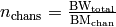
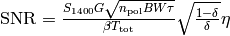

survey – Read a survey file into a survey object¶
- class survey.Survey¶
- Survey.__init__(surveyName)¶
Read in a (correctly formatted!) survey file
- Survey.__str__()¶
Define how to perform print Survey
- Survey.nchans()¶
Returns the number of channels, calculated as

- Survey.inRegion(pulsar)¶
Determines if Pulsar is inside survey region. Returns True or False accordingly
- Survey.inPointing(pulsar)¶
Determines if Pulsar is inside one of the survey’s pointings. Returns the offset from beam centre to the pulsar.
- Survey.SNRcalc(pulsar, pop)¶
Calculates the SNR of a Pulsar from Population pop in the survey. Returns -1 if pulse is smeared, and -2 if pulsar is outside survey region. SNR is calculated (with familiar terms) as

where

- class survey.Pointing¶
- Pointing.__init__(coord1, coord2, coordtype)¶
Converts (coord1, coord2) into correctly formatted (l, b). Coordtype must be either eq or gal. If eq, the RA and Dec are converted internally